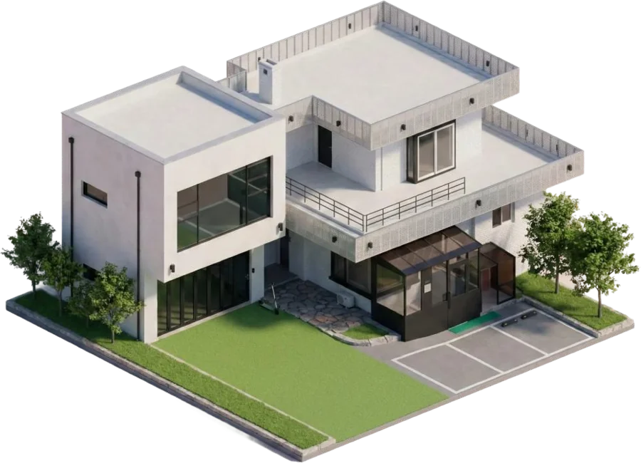
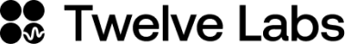
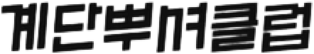
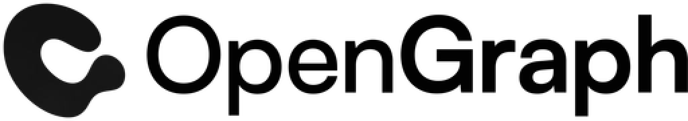
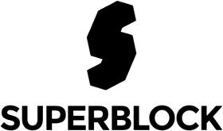
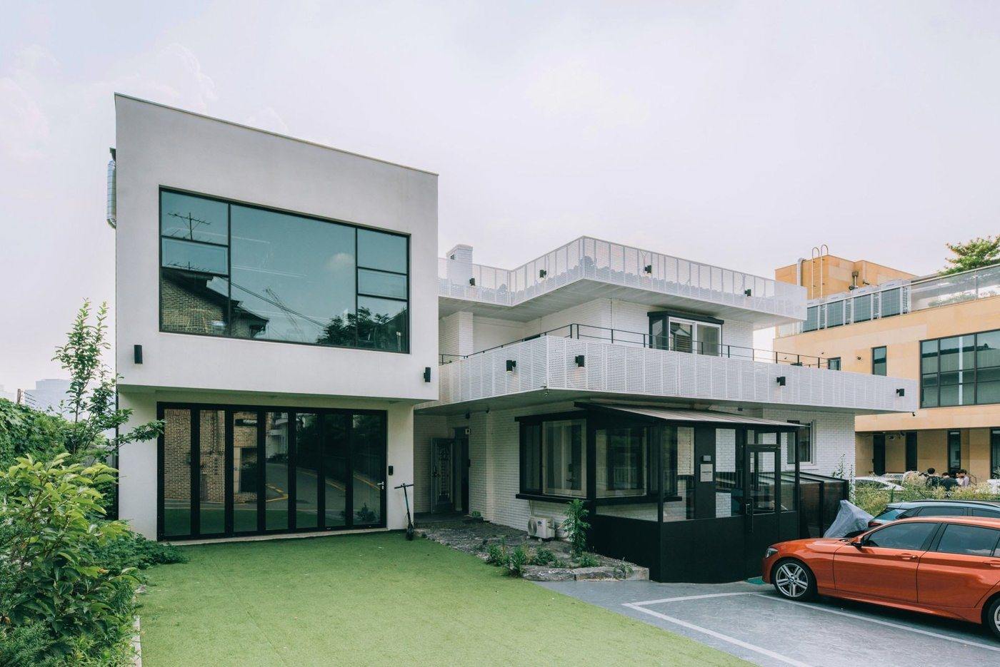
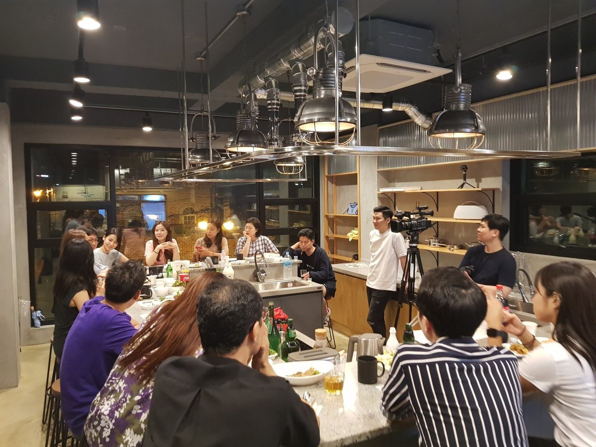
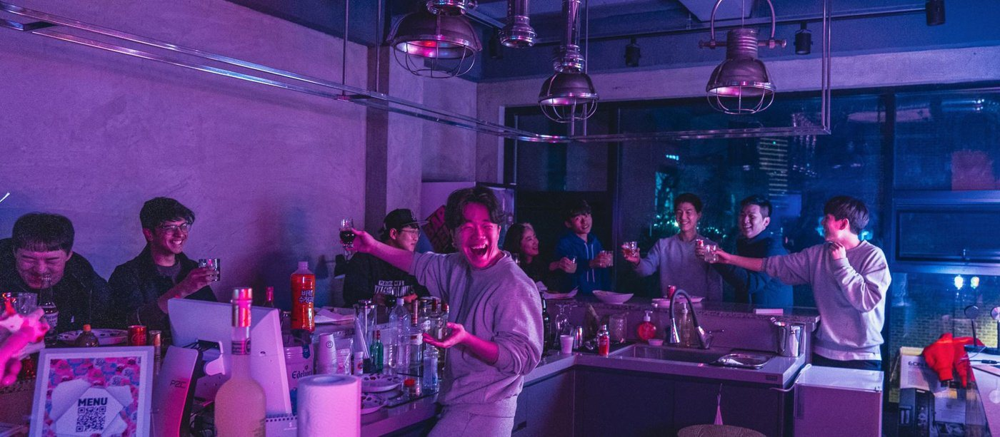
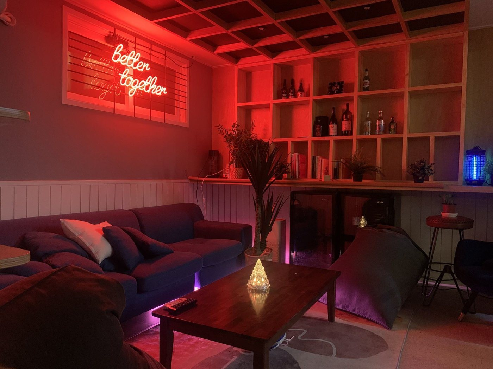

Nonce Lighthouse
- NAME
- 논스 라이트하우스 (논스 2호점)
- TYPE
- CO-LIVING, F&B
- PHILOSOPHY
- 어디에도 속하지 않았던 이들의 항구
다양성을 표방하는 커뮤니티 하우스 - TECHNOLOGY
- 소셜 다이닝 라운지, 반상회 문화소셜 다이닝 라운지
반상회 문화 - YEAR
- 2018 ~ 2025
- PEOPLE
- 115
Introduction
논스 커뮤니티의 다이버시티 블록
라이트하우스는 논스의 핵심 가치인 다양성을 오프라인 공간으로 구현한 커뮤니티 하우스입니다. 주거 공간과 소셜 라운지가 결합된 구조 위에, 전혀 다른 세계관을 가진 사람들이 이웃으로 모여 삽니다. 2주마다 열리는 소셜 다이닝과 월 1회 반상회 문화를 통해 라이트하우스는 논스 생태계 전체를 연결하는 거점이자, 서로 다른 삶이 자연스럽게 교차하는 공간으로 기능합니다.
Philosophy
어디에도 속하지 않았던 이들의 항구
논스의 다른 호점과 달리, 라이트하우스는 논스의 또 다른 핵심 가치인 다양성 Diversity을 오프라인으로 구현하고자 한 곳입니다. 등대 Light가 서로 다른 방향에서 오는 배들을 한 곳으로 이끌듯, 라이트하우스는 전혀 다른 궤도를 돌던 사람들을 한데 모읍니다.
같은 일을 하는 사람들끼리 모이면 대화가 쉽습니다. 맥락을 공유하고, 언어가 통하고, 금방 가까워집니다. 그러나 그 안에서는 예상 가능한 것들만 오가기 마련입니다. 오히려 새로운 무언가는 전혀 다른 세계가 부딪힐 때 생겨납니다.
라이트하우스는 주거 공간과 소셜 라운지가 결합된 독특한 구조로 설계되었습니다. 그렇기에 전문직부터 예술가, 요리사, 창업가, 개발자까지 - 라이트하우스는 서로 다른 세계관을 살아가는 사람들을 온전히 끌어안을 수 있습니다. 전혀 다른 삶을 살아가는 사람들이 이웃이 되고, 그 인연이 필연이 될 수 있는 공간으로서의 커뮤니티 하우스를 디자인하였습니다.
Technology
소셜 다이닝 라운지
2호점 라이트하우스는 다른 호점과 달리 다이닝 라운지가 쾌적하게 구비되어 있습니다. 이에 라이트하우스에서는 2주에 한번씩 소셜 다이닝이 열립니다. 단순 라이트하우스 멤버들만의 자리가 아닌, 다른 호점의 멤버들도 자리에 함께하며 밥을 매개로 서로 다른 공간에 흩어져 있던 사람들이 한 테이블에 모이게 됩니다. 그렇게 라이트하우스는 논스 커뮤니티 생태계를 밥심으로 연결하는 거점으로 기능하였습니다.
반상회 문화
논스의 모든 공간에서 월 1회 반상회가 열리지만, 가장 깊고 끈끈한 반상회가 진행되는 곳이 바로 이곳 라이트하우스입니다. 술잔이 돌고 진솔한 이야기가 오가며, 그 대화의 행간 속에는 발칙한 꿈부터 속 깊은 고민, 어디서도 꺼내지 못한 이야기들이 자리합니다. 모두 각자 다른 세계관에 살아가는 사람들이 온전하게 융합되어 서로의 세계로 한 발짝 들어갈 수 있는 시간을 반상회 문화를 통해 디자인하였습니다.
Results




See More



